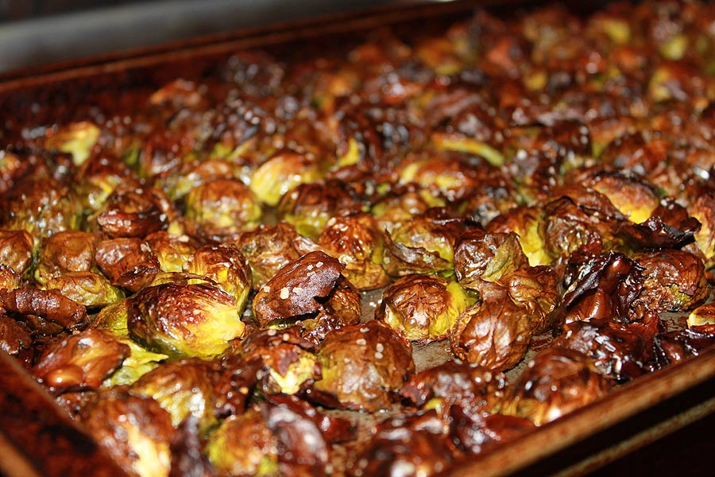

Brussels Sprouts Recipe

Description
Brussels sprouts have always had an unpopular reputation as a
vegetable thanks to so many people growing up eating them boiled. But where
they really shine is in the oven, crispy and salty. This recipe is how I personally
make them at home.
Ingredients
- Handful of brussels sprouts
- 1 Tbsp salt
- 1 Tsp pepper
- 1 Tsp garlic powder
- 1/4 cup of olive oil
Steps
- Cut the brussels sprouts in half and put into a bowl.
- Add the salt, pepper, garlic powder, and olive oil to the bowl
of brussels sprouts.
- Preheat the oven at 330 degrees Fahrenheit with a baking tray inside.
- Once preheated, remove the baking tray and add the cut brussels sprouts
face down on the tray. This will get the faces properly browned.
- Remove the brussels sprouts after 10-15 minutes or when a desired amount
of blackening has crisped up the sprouts.
- Carefully put brussels sprouts back into bowl and top with additional
salt, olive oil, or garlic powder. Serve immediately.
Return